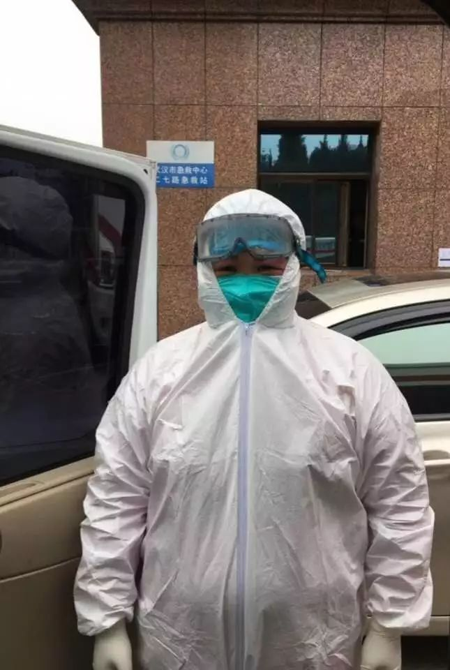
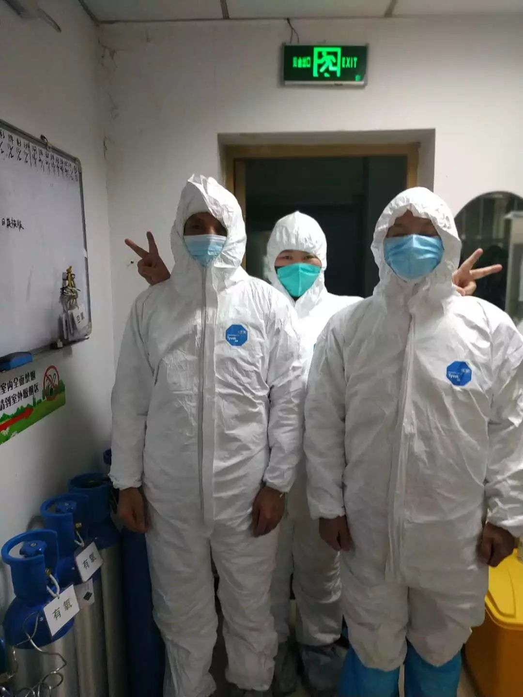

守护白衣天使，每个人都献出了自己的力量
原文链接 备份链接 同力协契 共克时艰 武汉“封城”已三周，新冠肺炎全国感染人数还在持续上涨。 所有人都在期待拐点的到来，无数白衣天使依旧坚守在抗击疫情第一线，一刻不敢松懈。社会各界也在通过各种方式参与到这场没有硝烟的抗疫保卫战里。 这 …
澎湃新闻记者 韩雨亭 通讯员 李俊平
2月15日，武汉市汉口医院120急救站护士彭璟在一线抗疫已经30天，今天让她最高兴的一件事情是——“我终于痛痛快快地洗了一把脸。”
作为急诊室护士，30天来，她一直坚守在抗疫一线，每天面对在生死之间较量的新冠肺炎的患者，检查仪器、输液、配药、打针、铺床、换药…… 起早贪黑，不敢松懈。
“我做的都是我应该做的，只是做好本职工作。”35岁的彭璟对澎湃新闻称。

30天来，武汉汉口医院急救站护士彭璟一直坚守在抗疫一线。
做完手术上一线抗疫
2019年底，彭璟感觉左眼视力下降，视力范围受限，经过检查，她患有虹膜粘连，急需手术治疗。经过本地一名眼科医生推荐，她在重庆找到了一位治疗葡萄膜炎的权威专家。
1月13日—15日，她在重庆第一附属医院分别做了两次手术，医生建议她休息一段时间才能去上班。
当时正逢武汉疫情蔓延，武汉市汉口医院涌入许多前来求诊的患者，眼看同事们忙得不可开交，彭璟决定赶回武汉和同事一起并肩作战。
1月16日下午，复查结束，她立即决定赶回武汉。恰逢春运期间，重庆直达武汉的动车票已经销售一空，她抢在最后5分钟买了一张从重庆到丰都的火车票，经过一番折腾，成功上车。
彭璟回忆称，上车后，她喜极而泣，回到武汉第二天，她就到医院上班了。
作为120急救站的护士，通常要上满24小时才会下班，不仅无法按时吃饭，睡眠也无法保证。
当医院领导听说她刚做完手术，劝她休息，她说是个小手术，无需休息。
武汉汉口医院作为收治新冠肺炎的定点医院，承担大量的收治任务，防护物资也极其匮乏。为节省护目镜，彭璟只能用84消毒液杀菌，这样才能反复使用，但84消毒液产生的氯气会刺激眼睛，令人异常难受，每当她抢救完病人，只能用激素眼药水来减轻不适感。
最让她难受的是每次出车回来，她都无法用水洗脸，只能拿洗面巾檫面，每次下班，她都感觉脸上黏黏糊糊的，时间长了，会特别不舒服。

彭璟和她武汉汉口医院的同事。
最长连续工作96小时
1月19日，这一天原本是彭璟的休息日，当天正好有一位年轻的护士临时有事，此时医院正是抗击疫情的关键时刻，正是用人之际，彭璟见到她很着急，主动提出帮忙顶班，此后她多次主动帮同事顶班。
当有人问她在眼睛急需休息之际，为何还要主动帮助同事顶班，她的回答是：“我是他们的老大姐，也是一名党员，我应该做表率。”
在抗击疫情期间，彭璟值得最长的一次班是从1月23日至1月26日之间，她几乎都在医院出车，忙前忙后，前后总共工作了96小时才回家休息。
有次，由于长时间没有洗过头发，她忍不住戴着游泳镜洗了一回，未成想因长期没有休息，抵抗力有所下降，那次洗完头发，她就出现感冒、咳嗽症状，她担心感染了新冠肺炎，还到医院做了CT检查，所幸检查结果正常。
彭璟住得离医院很远，武汉“封城”后，全城交通管制，让她上班极为不便。
虽然医院给医护人员提供了临时酒店，但她并没申请，觉得应该留给更多住得远的医护人员。
“我可以在值班室将就就可以了。”彭璟说。
为赶医院的班车，每天早晨，她必须5点半起床，下班的班车，即使正常下班，她回到家通常已是晚上8点钟了。

“看到同事们都很团结、积极的奋战在一线，我会特别感动，别人能坚持，我也一定能坚持，我的要求不多，只要能正常洗脸、洗头，我就心满意足了。”彭璟说。
本期编辑 邢潭
推荐阅读


原文链接 备份链接 同力协契 共克时艰 武汉“封城”已三周，新冠肺炎全国感染人数还在持续上涨。 所有人都在期待拐点的到来，无数白衣天使依旧坚守在抗击疫情第一线，一刻不敢松懈。社会各界也在通过各种方式参与到这场没有硝烟的抗疫保卫战里。 这 …
原文链接 备份链接 原创 钟玄雅 真实故事计划 真实故事计划 4天前 武汉是世界上大学生最多的城市之一。新型冠状病毒肺炎疫情爆发后，一百余万大学生返乡，成为各地防止传染的重点防控隔离对象，遭遇着忧虑、歧视和隐私泄露。疫情给这群新鲜人上了社 …
原文链接 备份链接 看到“7例肺炎”的新闻后，小熊赶回了武汉。但妈妈还是病倒了。目前居家隔离的妈妈病情有所好转，可小熊还是一刻不敢放松。 文 | 吴美芬 1月1日，家住武汉的小熊在贵阳出差。这天他第一次听说了“新型肺炎”，新闻里说武汉有7 …
原文链接 备份链接 昨天（1月28日），我的一位朋友在群里筹药，说她武汉的护士朋友可能感染了新型肺炎，但是武汉已经买不到这种药了，请求外地的朋友支援。医护人员患病的消息在群里激起了千层浪。群友纷纷去附近药店打听，最后有人在杭州买了药寄给护 …
原文链接 备份链接 昨天写了《自我隔离，静待春天》，发现大家各种迫切希望了解武汉的情况，所以我决定如无意外，每天都会在公众号给大家写点啥，一来给所有在武汉和在湖北，受到疫情影响的朋友们鼓鼓劲儿，二来也给外省的朋友们报个平安，让大家管中窥 …